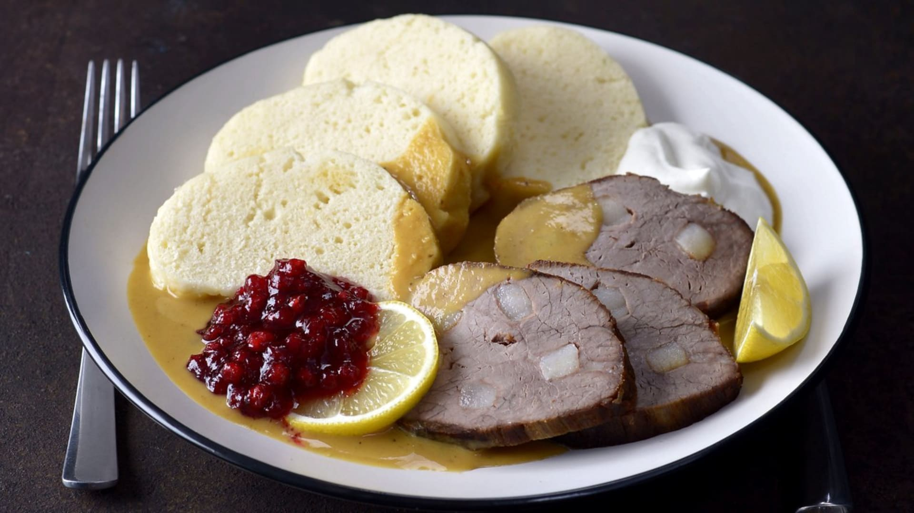

Svíčková na smetaně
Svíčková je tradiční české jídlo připravované z hovězího masa, zeleniny a smetany.
Ingredience:
- 1 kg hovězí svíčkové
- 2 mrkve
- 1 petržel
- 1/4 celeru
- 2 cibule
- 200 ml smetany
- Koření: bobkový list, nové koření, pepř
Postup:
- Maso prošpikujte slaninou a opečte na pánvi.
- Do hrnce přidejte nakrájenou zeleninu, cibuli a koření, vložte maso a podlijte vodou.
- Duste doměkka, poté maso vyjměte a omáčku rozmixujte.
- Přidejte smetanu, dochuťte a podávejte s knedlíky.
